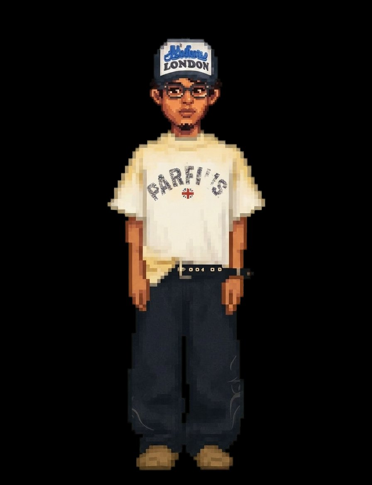
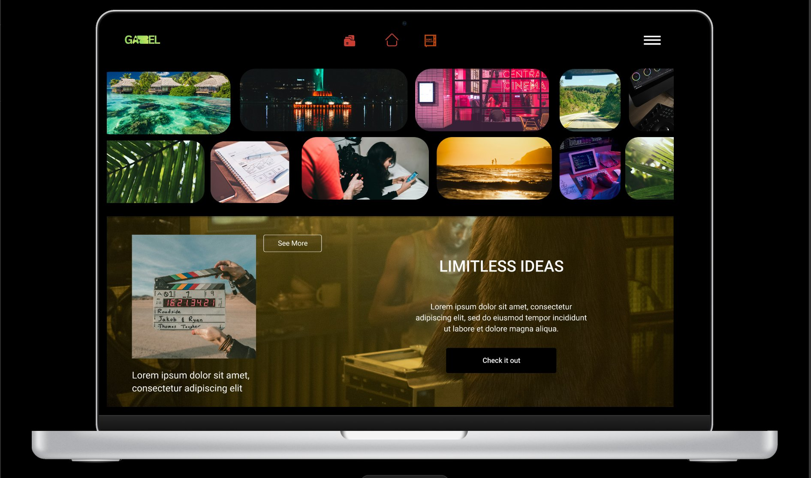
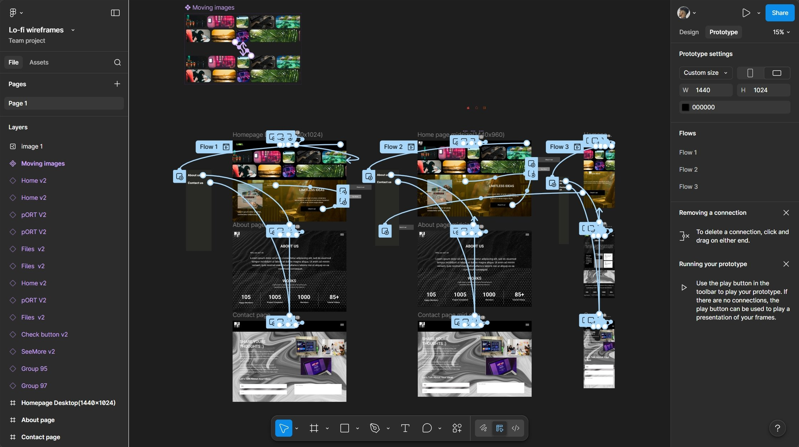
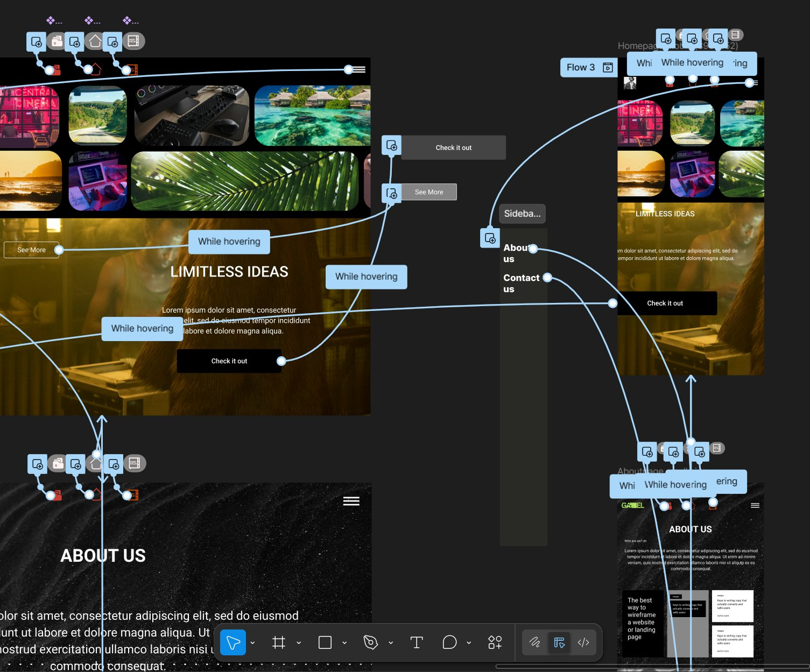

I'm Gazel. I build digital experiences that are clear, accessible, and easy to use. I combine design thinking with front-end development to make things that actually work for people.

UX Designer and Web Developer focused on creating accessible, user-centered digital experiences. Skilled in UX research, prototyping, and CMS-based web development with live deployment experience.
Designed and prototyped an end-to-end mobile application using a complete UX process including research, personas, user flows, wireframes, and high-fidelity Figma prototypes. Conducted usability testing to refine interaction clarity and user experience.
Developed and deployed a dynamic WordPress website using a custom CMS workflow. Manually installed and configured WordPress, customized theme templates, and implemented PHP logic to manage structured content and user interactions. Configured MySQL database integration, handled secure file uploads, and deployed the project to a live production server using FTP via FileZilla.
Three live projects. Click any card to see the full case study and process.

This is a personal portfolio site I designed and built completely from scratch. I wanted something that felt clean and professional but still reflected my own style. Everything from the layout to the code was made by me, with no templates or frameworks.
I handled everything on this project. I came up with the concept, wireframed the pages in Figma, made all the design decisions around layout, typography, and colour, and then coded the whole thing in HTML, CSS, and JavaScript. I also deployed it to GitHub Pages myself.
I looked at portfolio sites from other UX and front-end designers to understand what worked well. I paid attention to how they organized content and communicated their skills to employers.
I wireframed every page in Figma across desktop and mid-size breakpoints before writing any code. This helped me figure out the structure and navigation early on.
I connected the frames into a clickable prototype to test the flow, then built the final site in code with consistent spacing, type, and colour throughout.


CMS (Thrifted Vintage) is a clothing e-commerce store I built on Shopify. The focus was on creating a strong brand identity from scratch, including the logo, colour palette, and overall visual direction, so the store would feel premium but still approachable for vintage streetwear shoppers.
I took care of the full visual design and brand identity for CMS. That included logo design, colour palette, typography, and customizing the Shopify theme to match. I organized the product layout to make it easy to browse, and made deliberate UI decisions to reflect the aesthetic the target audience would connect with.
The store targets people aged 18 to 30 who are into streetwear and sustainable fashion. I looked at how they shop and what visual styles they respond to, which pointed me toward dark tones, editorial imagery, and minimal clutter.
The CMS logo uses a red maple motif as a nod to Canadian roots, paired with a dark palette and clean typography. The goal was for the brand to feel established and intentional rather than like a student project.
I customized a Shopify theme to align with the brand by adjusting layout sections, product grids, navigation, and typography settings across the store.
Discover Cancún is a travel website I designed and built to inspire people to visit the destination. I created a custom WordPress theme from scratch and deployed it to a live server using SSH through FileZilla. The site includes a vibrant brand identity, an immersive hero section, a search function, and a gallery of destination content.
I designed and developed everything on this project. I created the Cancún wordmark, picked the colour palette, built the page layouts in WordPress, and wrote custom CSS to achieve the visual design I had in mind. I also handled the full deployment process remotely using SSH and FileZilla to push the theme files to the live server on Pantheon.
I looked at how people browse travel sites and what they need most: strong visuals to get inspired, easy access to key info, and simple navigation. That guided every layout decision I made.
I organized the site around three things users need: inspiration through visuals, useful destination info, and a clear path to act. Navigation was kept simple to reduce friction.
I built a custom WordPress theme using PHP template files and custom CSS, then deployed it to the live Pantheon server remotely via SSH using FileZilla for file transfer.
Open to internships, freelance work, and collaborations.